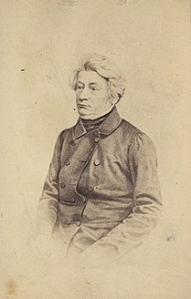
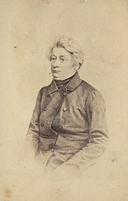
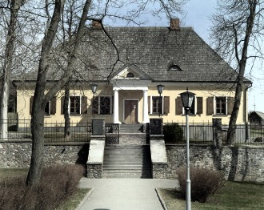

Adam Mickiewicz
Family
Adam Bernard Mickiewicz was born on 24 december 1798 in Zaosie. His father was Mikołaj bearing hereditary coat of arms Poraj and his mother was Barbara Majewska. He also had two brothers: Aleksander and Franciszek.
Early Years
Since 1807 he attended a dominican school in Navahrudak. In 1812 his father died due to serious illness. It was also the same year Napoleon's forces passed through Navahrudak. Finally in 1815 Mickiewicz leaves for Vilnius to study. He started learning in Imperial Vilnius University in physics and mathematics division, however he didn't give up humanities lectures. Due to family's financial problems he decided to study in universities' teachers' seminar, which would let him work as a teacher later. Ultimately he finished studies in 1817 when he created the Philomath Society with a group of friends. It was a patriotic conspiracy organisation meant to nationally educate children.
Imprisonment and exile
For his involvement in the Philomaths he was arrested along with a group of friends and imprisoned in bazylian's monastery in Vilnius(1823-1824). Years 1824-1829 he spent in central Russia, Odessa, Moscow and Saint St. Petersburg, where he entered environment of progressive Russian elite. In 1829 he went on a journey around Europe. He visited Germany,Switzerland and Italy, in Berlin he attended Hegl's lectures. He made many contacts in international artist environment. After the November Uprising has started in 1830 he unsuccessfully tried to go back to Poland. Since 1832 he lived in Paris, with a break to stay in Lausanne(1839), where he lectured latin literature, and in Rome (1848), where he tried to receive support of Pope Pious IX for independence movements aka. Springtime of Nations.
Handwriting of "Oda do Miłości"

Mickiewicz's portrait

Stay in Paris
Poet's life in Paris was rough. He lacked stable income. Emigratory environment was fragmented by political conflicts. For a time Mickiewicz participated in public life, he cooperated with Literary Society and Polish National Society among others. In 1833 he was publicist and redactor of "Polish Pilgrim". He was friends with Hughes de Lamennais, Charles de Montalembertem and George Sand. In 1834 he married Celina Szymanowska, with whom he had six children. Mickiewicz stayed away from politics up until year 1840, when he took over newly created cathedral of slavic literature in Collège de France. Along with Jules Michelet and Edgar Quinet he represented Collège's democratic opposition against the July monarchy. In 1841 the poet established contact with Towiański's circle, leader of a sect preaching new revelation and restoration of spiritual life (there were tens of such sects in France at the time). Towianizm's propaganda, along with radical political and societal opinions were the reason of suspension of his professor position.
Stay in Rome
During his stay in Rome in 1848 Mickiewicz created the Polish Legion serving Lombardy, he also tried to publish a paper with a radical societal program, however due to intervention of the Russian embassy, Mickiewicz in 1851 was put under police surveillance and the paper suspended.

Last years
His last patriotic action was an attempt to create Polish Legions to fight Russia during the Crimean War. To do so he arrived in Istanbul on September 1855, where he unexpectedly died. He was buried in France on a Polish cementary in Montmorency. In 1900 the coffin was solemnly moved to a sarcophagus in the Wawel Cathedral.
Works
Adam Mickiewicz made a debut in 1818 with a poem „Zima miejska” via „Tygodnik Wileński”. The earliest period of Mickiewicz's works since the debut to 1824, is known as the Vilnius-Kovenia period. He stayed under the influence of Wolter, who's works he translated to Polish. In 1822 he created collection "Ballady i romanse", considered not only the proper Mickiewicz's debut , but also the work officially starting the romantism period in Poland. In it's time the ballad opening the collection,"Romantyczność", caused a lot of controversy, especially by placing folklore above progress of civilization and creation of a new type of moral pattern. In 1834, in Paris he released the last great work of his life – "Pan Tadeusz". This epical poem is made of 12 books. After author's death painful epilog to the poem was released. "Pan Tadeusz" became the most popular work of Polish literature in next generations. 4th April 1843 in Collège de France, Adam Mickiewicz delivered Lesson XVI, determined the last theory of romantic drama in European literature. Lecture concerned analysis of Zygmunt Krasiński's Undivine Comedy, which allowed drawing of wider conclusions. The entirety of it created the concept of so called slavic drama.
Interesting facts
- In 1822 Mickiewicz became a mason in rank of a journeyman.
- When Mickiewicz was 5 years old he fell off a roof which caused him to lose consciousness. His mother immediately started praying to the holy mary, shortly after which he woke up. He included this event in the Invocation.
- When he was in the fourth grade, priest Dzwonkowski, who was a literature professor, gave students quite hard homework. They were supposed to write a poem on a specified topic. When the next day Dzwonkowski read Mickiewicz's poem, he suspected that he wrote it with a help of his dad, known for writing short works.
- Mickewicz got married in a borrowed tail-coat, due to a misunderstanding. His friends left his suit back at home, but the poet went straight to his publisher and witness - Eustechy Januszkiewicz. When the witness saw unprepared Mickiewicz he immediately handed over his shirt and tail-coat.
- His potentially greatest work – "Historia przyszłości" was never published.
- Mickiewicz kept in touch with Russian poets,Alexander Puszkin, Wasilij Żukowski and Aleksiej Chomiakow among others.
Mickiewicz's house
 Przygotowali:- Jakub Morozas 1P
- Szymon Grela 1P